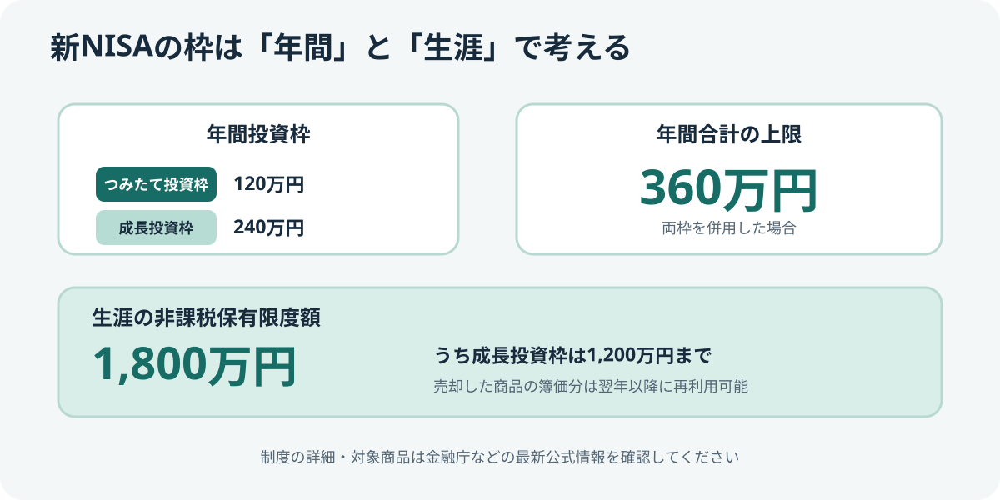
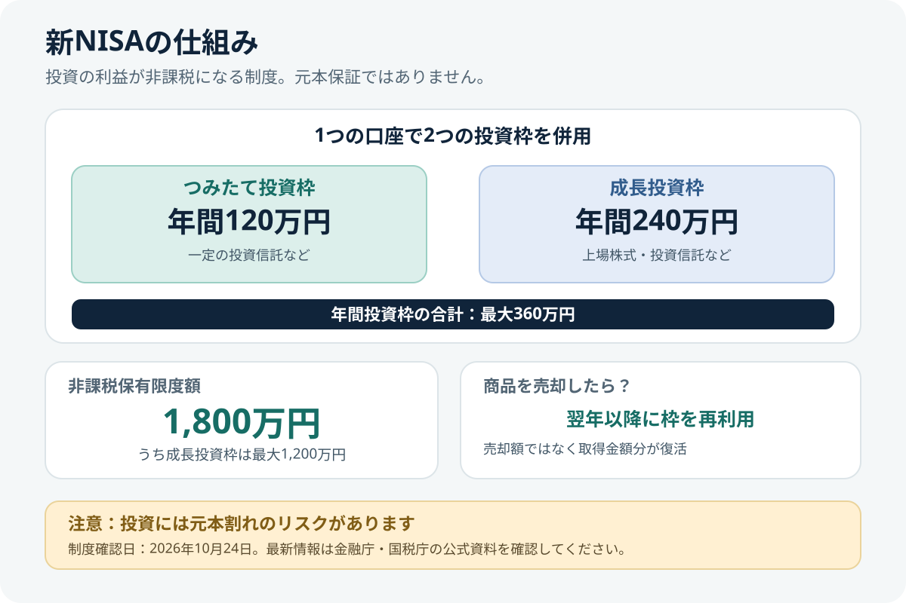

新NISAとは？つみたて投資枠・成長投資枠と非課税枠を初心者向けに解説
NISAは、一定の投資から得られる利益が非課税になる制度です。ただし、非課税になることと投資で利益が出ることは別です。制度の枠や注意点を知り、生活資金や投資目的に合うかを確認しましょう。
- 成人向けNISAには「つみたて投資枠」と「成長投資枠」があり、併用できます。
- 年間投資枠は合計最大360万円、非課税保有限度額は合計1,800万円です。
- 商品を売却すると、取得金額（簿価）分の非課税保有限度額を翌年以降に再利用できます。
- NISAでも元本割れは起こり得ます。非課税制度は損失を補償するものではありません。
金融庁の案内では、2027年1月から「つみたて投資枠」の年齢要件が撤廃され、0～17歳もNISA口座を開設できるようになります。未成年者が利用できるのはつみたて投資枠のみで、年間投資枠は60万円、非課税保有限度額は600万円です。成長投資枠は利用できず、金融機関の変更もできません。また、原則として18歳になるまで資産を払い出せませんが、12歳以降は子どもの同意など一定の条件を満たす場合に払い出しが認められます。成人向けのNISAとは条件が異なるため、口座開設前に金融庁の最新案内を確認してください。

1. NISAの仕組み
通常、株式や投資信託などの売却益・配当等には税金がかかる場合があります。NISA口座で対象商品を保有し、制度上の条件を満たす場合、売却益や配当等が非課税になります。NISAを使うには、銀行や証券会社などでNISA口座を開設します。
非課税になるのは対象となる利益であり、投資元本が守られるわけではありません。値下がりすれば、購入額を下回る可能性があります。
2. 2つの投資枠の違い
| 項目 | つみたて投資枠 | 成長投資枠 |
|---|---|---|
| 年間投資枠 | 120万円 | 240万円 |
| 主な対象商品 | 長期・積立・分散投資に適した一定の投資信託 | 上場株式や投資信託など（対象外商品あり） |
| 併用 | 同じNISA口座で併用可能 | |
年間投資枠は、つみたて投資枠が120万円、成長投資枠が240万円で、合計最大360万円です。これは投資できる上限であり、上限まで投資する必要はありません。投資対象や取扱商品は金融機関によって異なるため、購入前に公式の商品一覧や目論見書を確認してください。
3. 非課税保有限度額は合計1,800万円
成人向けNISAの非課税保有限度額（総枠）は1人あたり1,800万円です。このうち、成長投資枠で保有できる上限は1,200万円です。枠は時価ではなく、原則として買付け時の金額（簿価）をもとに管理されます。
例えば、商品を100万円で購入し、値上がりして150万円になった場合、保有枠の計算は時価150万円ではなく、取得金額100万円を基準にします。具体的な枠の利用状況は、金融機関の口座画面で確認してください。
4. 売却すると非課税枠はどうなる？
NISA口座の商品を売却すると、売却した商品の取得金額（簿価）分の非課税保有限度額を翌年以降に再利用できます。売却した年に年間投資枠が増えるわけではなく、再利用できるのは翌年以降です。また、その年に使わなかった年間投資枠を翌年に繰り越すことはできません。

5. NISAを使う前に確認したい注意点
- 元本保証ではない：株式や投資信託の価格は変動し、損失が生じることがあります。
- 対象商品を確認する：すべての金融商品がNISAで買えるわけではありません。
- 枠を使い切る必要はない：生活費や近い将来に使う予定のお金を無理に投資へ回さないことが大切です。
- 損益通算に注意：NISA口座の損失は、課税口座の利益や配当等と損益通算できず、繰越控除もできません。
- 配当等の受取方法を確認する：上場株式の配当等を非課税にするには、受取方法など所定の条件があります。証券会社の案内を確認してください。
- 制度改正に注意する：制度や対象者の条件は変更される場合があります。申込み時点の金融庁・国税庁の案内を確認してください。
6. 公式情報で最新条件を確認する
制度の条件や対象商品は変更される可能性があります。口座開設や商品購入の前には、次の公式情報を確認してください。
- 金融庁：NISAのよくある質問 — 売却後の枠の再利用など
- 国税庁：NISA制度 — 税務上の取扱い
まとめ
NISAは、対象となる投資利益が非課税になる制度です。つみたて投資枠と成長投資枠の違い、年間投資枠、非課税保有限度額、売却後の再利用ルールを理解したうえで、自分の目的やリスク許容度に合うかを考えましょう。制度の非課税メリットだけで商品を選ばず、コストやリスクも比較することが大切です。